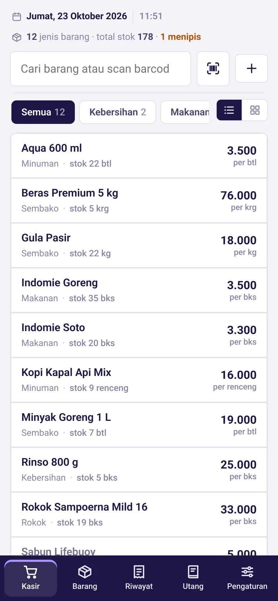
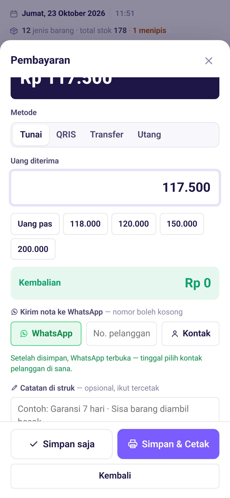
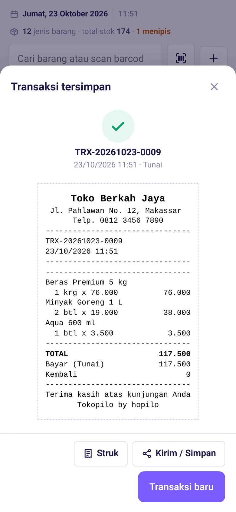
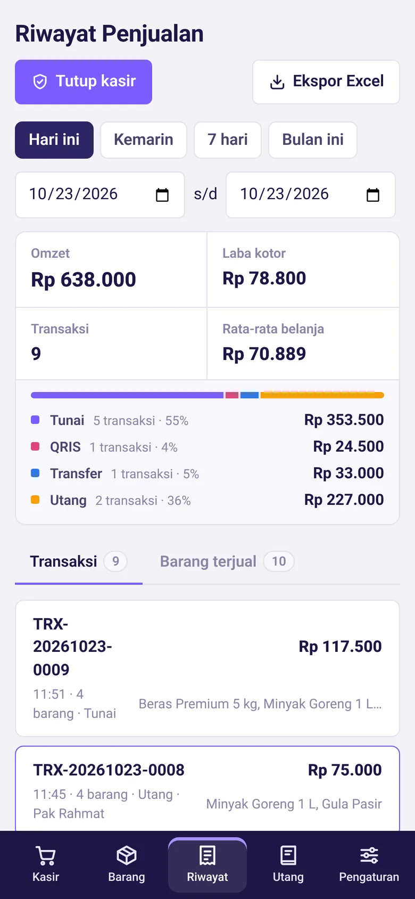
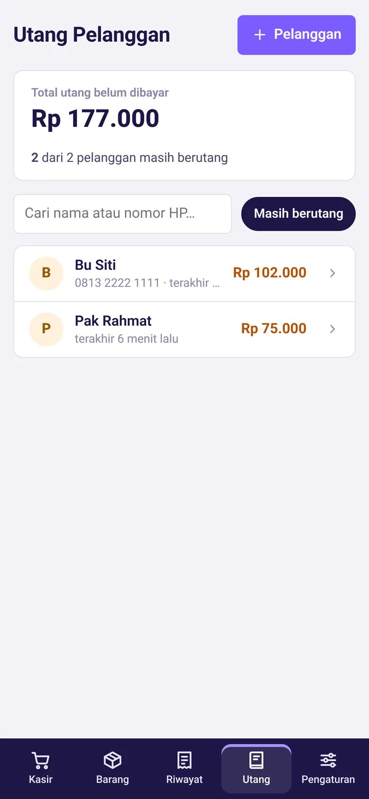
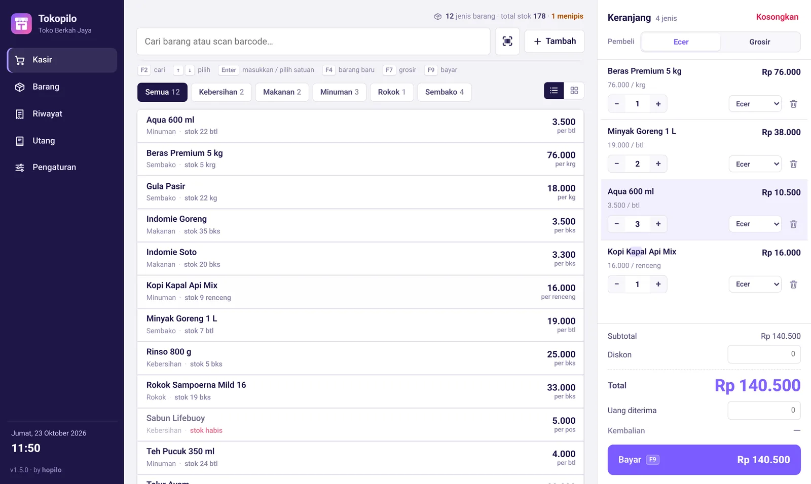
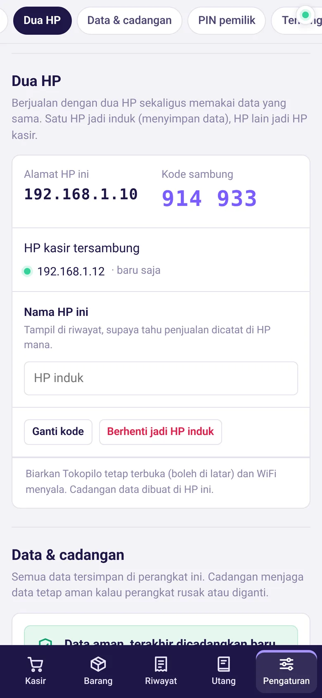

Aplikasi kasir dari hopilo
Kasir untuk warung dan toko. Gratis, tanpa langganan.
Catat penjualan, cetak struk ke printer thermal, kirim nota ke WhatsApp, dan pantau stok. Semua data tersimpan di HP atau komputermu sendiri, dan tetap jalan walau internet mati.
- Gratis selamanya
- Bisa tanpa internet
- Data di perangkatmu

Fitur
Semua yang dipakai kasir sehari-hari
Dibuat dari kebutuhan toko sungguhan: banyak satuan, harga ecer dan grosir, pelanggan yang ngutang, dan printer struk yang murah.
Kasir cepat
Cari nama atau scan barcode, pilih satuan (pcs, pack, dus) dan harga ecer atau grosir. Kembalian dihitung otomatis.
Cetak struk
Langsung ke printer thermal 44 sampai 112 mm, atau isi ukuran sendiri, lewat Bluetooth (HP) atau USB (komputer). Bisa pakai logo toko.
Nota ke WhatsApp
Setelah transaksi, WhatsApp terbuka dengan gambar nota. Tinggal pilih kontak pelanggan, tidak perlu mengetik nomor.
Buku utang
Catat kasbon pelanggan, terima uang muka dan cicilan, lalu tagih lewat WhatsApp dengan rincian lengkap.
Rekap & tutup kasir
Omzet, laba kotor, barang terlaris, dan setoran per metode bayar (tunai, QRIS, transfer). Ekspor ke Excel.
Stok & barang
Stok berkurang otomatis setiap terjual, peringatan stok menipis, riwayat keluar-masuk barang, impor dari Excel.
PIN pemilik
Karyawan tetap bisa berjualan, tapi laba, harga modal, ubah harga, dan pengaturan butuh PIN pemilik.
Cadangan otomatis
Data dicadangkan setiap hari. Di komputer bisa diarahkan ke Google Drive atau OneDrive.
Cetak resi
Untuk yang juga jualan online: resi PDF dari marketplace dirapikan lalu dicetak ke printer thermal.
Tampilan
Sama mudahnya di HP dan komputer





Baru di versi 1.5
Dua HP, satu data toko
Satu HP jadi induk yang menyimpan data, HP lain jadi kasir. Stok, harga, dan penjualan langsung sama di keduanya. Cukup WiFi atau hotspot yang sama, tidak perlu internet.
Jadikan HP utama sebagai induk
Pengaturan → Dua HP → Jadikan HP ini induk. Muncul kode sambung 6 angka.
Sambungkan HP kasir
HP induk ketemu otomatis di WiFi yang sama. Masukkan kodenya, selesai.
WiFi putus? Tetap jualan
Penjualan disimpan di HP kasir dan dikirim sendiri begitu tersambung lagi.

Unduh
Pasang Tokopilo, gratis
Versi terbaru 1.5.1. Data toko tetap aman saat memasang versi baru di atas versi lama.
Android
Tokopilo.apk · Android 7.0 ke atas
- Buka file APK yang terunduh, pilih Instal.
- Kalau diminta, izinkan Instal aplikasi tidak dikenal untuk browser atau WhatsApp.
- Untuk update, pasang di atas aplikasi lama. Jangan dihapus dulu.
Windows
Pemasang .exe · Windows 10 & 11 (64-bit)
- Jalankan file pemasang yang terunduh.
- Kalau muncul "Windows melindungi PC Anda", klik Info selengkapnya lalu Tetap jalankan.
- Tokopilo muncul di menu Start dan desktop.
Peringatan saat memasang muncul karena Tokopilo dibagikan langsung, bukan lewat Play Store atau Microsoft Store. Tokopilo tidak mengirim data tokomu ke mana pun.
Tanya jawab
Yang sering ditanyakan
Benar-benar gratis?
Ya. Tidak ada biaya bulanan, tidak ada batas jumlah barang atau transaksi, dan tidak ada iklan. Kalau Tokopilo membantu usahamu, kamu bisa mendukung pengembangannya lewat Trakteer.
Perlu internet?
Tidak. Berjualan, cetak struk, dan semua catatan jalan tanpa internet. Internet hanya dipakai saat membuka WhatsApp dan memeriksa versi baru.
Data tokoku disimpan di mana?
Di HP atau komputer tempat Tokopilo dipasang. Tidak ada akun dan tidak ada server. Cadangan dibuat otomatis setiap hari, dan bisa kamu simpan ke Google Drive atau flashdisk.
Printer apa yang bisa dipakai?
Printer thermal yang mendukung ESC/POS, yaitu kebanyakan printer struk murah. Lebar kertas 44 sampai 112 mm (paling umum 58 dan 80 mm), atau isi ukuran sendiri. Di HP lewat Bluetooth; di komputer lewat Bluetooth, USB, atau printer Windows.
Bisa dipakai dua kasir sekaligus?
Bisa. Pakai fitur Dua HP: satu HP atau komputer jadi induk, perangkat lain tersambung lewat WiFi yang sama dan memakai data yang sama.
Bisa pindah dari aplikasi kasir lain?
Daftar barang bisa diimpor dari file Excel. Template Excel-nya ada di menu Barang → Impor.
Dukung hopilo
Tokopilo dibuat dan dirawat sendiri oleh hopilo. Dukunganmu membantu fitur baru dan perbaikan terus berjalan.